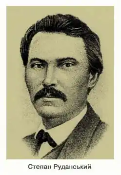
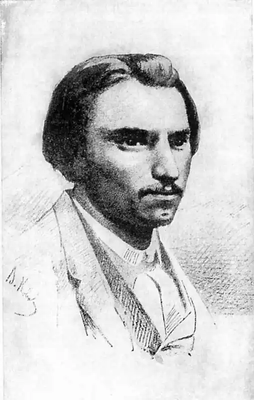

СТЕПАН РУДАНСЬКИЙ
(1834 — 1873)
Народився С. В. Руданський в селі Хомутинцях Вінницького повіту на Поділлі 6 січня 1834р. у родині сільського священника. Після початкової науки в дяка майбутній поет вчився у Шаргородській бурсі (1842 — 1849) та Подільській духовній семінарії (1849 — 1855). Ще в роки навчання у семінарії почав назрівати конфлікт з батьком. Коли 1856р. Руданський приїздить до Петербурга, то цілком самочинно, проти волі батька, вступає не до духовної академії, а до медико-хірургічної, відомої вже на той час як осередок передової науки і культури. Тут у 50 — 60-х роках працювали С. П. Боткін, І. М. Сєченов та інші молоді передові вчені. В медико-хірургічній академії підтримувався традиційний інтерес до літератури й мистецтва. Ще раніше професор хірургії академії Каменецький разом з Парпурою підготував перше видання "Енеїди" І. Котляревського. Аматорський гурток студентів цього навчального закладу вперше поставив драму Шевченка "Назар Стодоля" (1844). Тут здобували освіту колишні петрашевці, що, безперечно, активізувало громадянську настроєність студентів. За роки перебування в Петербурзі Руданський утвердився на демократичних світоглядних позиціях, остаточно сформувався як народний письменник. Петербурзький період найбільш плідний у житті Руданського-поета. В цей час помітно загострюються громадянські мотиви його творчості ("До дуба", "Гей, бики!"), визріває й кристалізується майстерність гумористичного й сатиричного вірша, наслідком чого було виникнення нового поетичного жанру в українській поезії — віршованої гуморески-співомовки, тематично різноманітної й стилістично своєрідної. Одночасно Руданський продовжував писати балади, ліричні вірші, віршовані казки й поеми, перекладав з російської та інших мов. Після закінчення академії Руданський одержав звання повітового лікаря і дозвіл працювати в Криму, куди він переїхав 1861р. і де сподівався поправити своє підточене здоров'я. З 1861 по 1873р. Руданський працював міським лікарем у Ялті, а також лікарем у маєтках князя Воронцова. Він доклав багато зусиль для піднесення благоустрою міста, невтомно трудився як лікар і почесний мировий суддя Сімферопольсько-ялтинської мирової округи, водночас цікавився археологією, етнографією, відновив розпочаті ще на Поділлі фольклорні заняття, продовжував поетичну творчість, головним чином, у галузі перекладу. Знайомство з поетом і композитором П. Ніщинським, художником І. Айвазовським, поетом та істориком М. Костомаровим, поетом А. Метлинським наклало відбиток на творчі заняття Руданського, підтримувало інтерес до живопису, старовини, народної творчості. Найбільше ж уваги в ялтинський період Руданський приділяв перекладам з античної та російської літератур (Гомер, Вергілій, Лєрмонтов). Помер С. Руданський 3 травня 1873р. і похований в Ялті на Массандрівському кладовищі. С. Руданський, готуючи свої твори до видання, укладав їх у рукописні збірки. Важкі цензурні умови, а також урядові заборони утруднювали й гальмували їх друкування. Основні автографи творів Руданського складають три томи, переписані й оформлені самим поетом. Перший, під назвою "Співомовки козака Вінка Руданського, книжка перша, з 1851 року до 1857" (Вінок — переклад імені поета з грецької: стефанос — вінок), вміщує пісні та балади в хронологічній послідовності їх написання. Другий — "Співомовки козака Вінка Руданського, книжка друга, 1857 — 1858 і 1859" — складається з 235 поезій, гуморесок, названих "приказками", й вірша "Студент". Третій — "Співомовки козака Вінка Руданського, 1859 — 1860" — це пісні, приказки, легенди, історичні поеми. Крім цієї першої авторської редакції творів Руданського, відомі автографи збірок, укладених за жанрово-тематичним принципом у різні часи й призначених до видання. До таких належать рукопис "Нива" (1858 — 1859) і рукопис, який 1861р. мав уже цензурний дозвіл, але так і не з'явився друком. За життя поета була опублікована лише невелика кількість його творів у петербурзькому тижневику "Русский мир" (1859), у двох номерах "Основи" (1862), в "Опыте южнорусского словаря" Шейковського (1861), у львівському журналі "Правда". Більшість творів поета побачила світ у 80-х — на початку 90-х років уже після його смерті у львівських виданнях "Правда", "Зоря", в "Киевской старине". Перше видання "Співомовок" окремою книгою, яке вмістило двадцять вісім віршів, здійснила в Києві Олена Пчілка 1880р. під псевдонімом "Н-й Г-ь Волинський" (Невеличкий гурток волинський). Найповніше дореволюційне видання творів Руданського у семи томах (перше видання — 1895 — 1903, друге — 1910) вийшло завдяки зусиллям М. Комарова, Василя Лукича (В. Левицького), А. Кримського та І. Франка. Найбільш повним, прокоментованим і укладеним з урахуванням авторської роботи над підготовкою рукописів до видання є тритомник "Степан Руданський. Твори в трьох томах" (К., 1972 — 1973). Крім оригінальних творів, Руданський упорядковував збірники народних пісень з власних записів ("Народные малороссийские песни, собранные в Подольской губернии С.В.Р.", Кам'янець-Подільський, 1852; "Копа пісень", Ялта, 1862). За життя поета вони не були опубліковані, а після смерті його довгий час залишалися в приватних руках. Виявлені й вивчені радянськими фольклористами, вони видані 1972 р. у Києві. Усі свої твори, включаючи й віршовані переклади, Руданський називав "співомовками". Цей термін закріпив за гуморесками І. Франко. З того часу традиційним стало саме їх іменувати "співомовками". Це виявилося найбільш зручним, оскільки саме гуморески (співомовки) Руданського являли собою нову різновидність гумористично-сатиричних віршованих творів, якої раніше в українській поезії не було і поява якої потребувала закріплення відповідним терміном. Історія української літератури другої половини ХІХ століття, Київ, 1979.